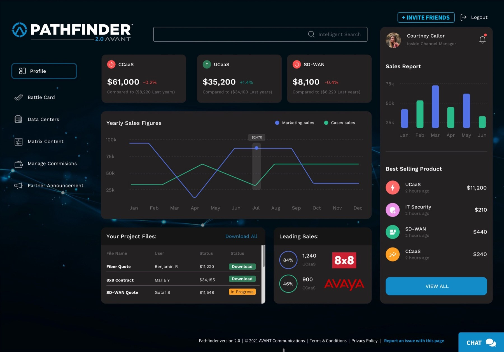
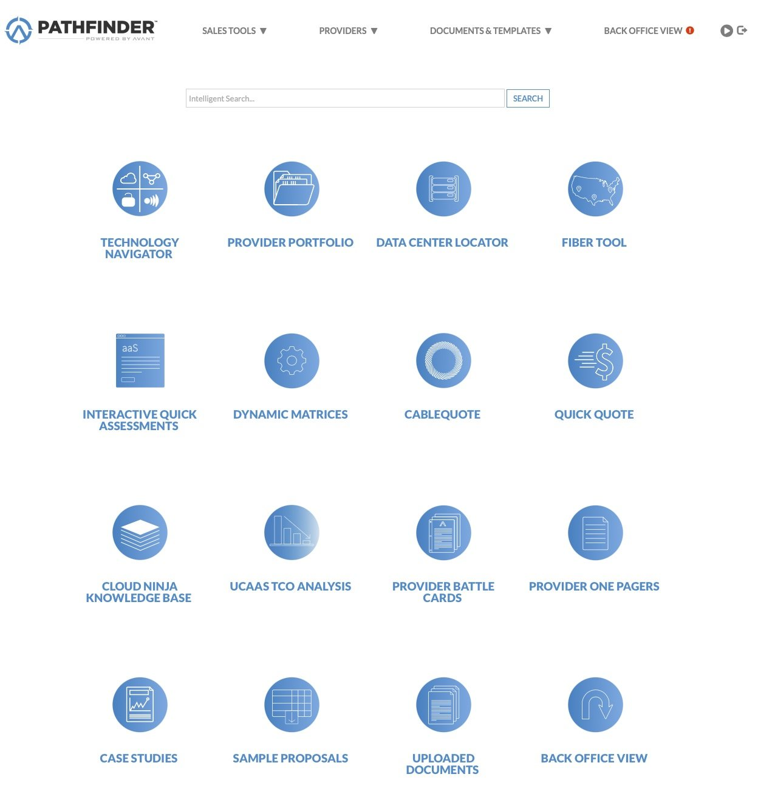

Technology advisors sell telecom and cloud services to businesses. Pathfinder gave them sixteen good tools. But no tool knew which client you were working on. So the deal lived somewhere else.
The deal: email · spreadsheets · final_v3_REAL.xlsx
16 tools, 0 shared context. Each one opened alone and forgot you when you left.
1 deal, everything attached. The same tools, now hanging off the deal they belong to.

The actual starting point. A search bar and sixteen icons. I am showing it once, small and in grey, because it is the only old screen that matters to the story. Every other product image on this page is from the final UI.
I did not start with interviews. Ask a salesperson about their process and you get the pitch. So I sat in on real deals and logged every time someone left one tool to find something in another.
Advisors are fast at the job. What slowed them down was rebuilding the picture every time they came back. Which quote did the client see. Who did I rule out, and why.
I assumed a matching engine was the prize. It was not. "The system picked these three" makes an advisor replaceable. They needed a reason they could say in their own words.
Most of a deal's life is spent pending. The old product only had screens for moments when something happened. Everything in between was invisible.
A deal has no single state. Its pieces live in sixteen tools and an inbox.
give every deal one home that shows where it is and what is pending?
Five states and a project rail.
Recommendations arrive without reasons. A ranked list does not survive "why them?"
give the advisor a reason for each provider they can say on a call?
Technical fit, with a differentiator beside it.
Pending work is invisible. People chase it, and the chasing becomes the work.
make the in-between states first-class?
A status page for anything you are waiting on.
Five states, in the order a deal actually moves. You can see the order and jump around it. Nothing locks. The rail carries the deal's files through all five.
I built all three. The one that looked best in review lost to the one that worked on a live client call.
One step at a time, forward only. Real deals loop back. A client changes scope in week three and the wizard has no answer.
RejectedEverything one click from a home page. Better than the launcher, but still a menu. It shows what exists, not where this deal stands.
RejectedOrder without enforcement. Files travel with the deal. The cost: every step has to make sense when entered out of order.
ChosenComparing providers is the moment the advisor is sharing their screen with the client. That decided it.
Everyone liked it in review, including me. In use, advisors picked the logos they already knew. It rewarded recognition, not fit.
RejectedA column is something you can scan, and point at, on a shared screen. The cost: it looks less impressive in a portfolio.
ChosenI put a clickable prototype in front of advisors before engineering wrote anything. Each dot is one advisor. Blue means they got there.
| Scenario | Round 1 | Round 2 |
|---|---|---|
| Open a deal you have not touched in two weeks. Where does it stand? | ||
| Pick three providers for the client, and tell me why. | ||
| Register the deal with the providers you chose. | ||
| Has the assessment you asked for come back? |
Every column had the same weight, so the fit score was one more cell and nobody looked at it. It got its own column and its own type. It is out of five on purpose. A percentage invites "why 82 and not 85".
As its own page with its own button, "Register" felt like signing something, and advisors stalled. But the decision was already made in step 2. So the control moved to where the decision happens.
An assessment now has a status page: what was sent, when, by whom, and what has come back so far. Nobody has to ask "did you get this".
Advisors put this in front of their clients. Inconsistency read as unreliability. Once I could count it, I could get it funded.
Now one.
Now one.
Now a scale, three steps.
cyan-400 #27BDFA
blue-700 #0B5F8Bcolor-action
= cyan-400button-primary-bgEvery component shipped with default, focus, error, disabled and loading states. Every state, or it isn't done.
Pathfinder 2.1 is a working build, not a set of screens. Tokens, foundations, every component with its states, dark and light themes, and a changelog. It has grown past the shipped UI above, so treat it as the library the product draws from, not a mirror of it.
Sidebar, cards, one accent color. The project and its status stay on screen wherever you go. Less for a client to read past on a shared screen.
Back office. Scheduling a partner announcement, with projects and their status in the right panel.
Dashboard. Revenue by technology, open project files with status.
Entry. One logo, one action.
I owned this for three years. The structure went from v2.0 to v3.0 without a redesign. That is the result I am proudest of.
days, median, from a client's first request to the first quote.
of active advisors ran a deal end to end within two quarters. Nobody was required to.
people across AVANT trained to build on the same system.
We counted visits to each state. Research had already told me the waiting was the product. I should have measured how long deals sat in a state from day one.
Advisors got a clear view of a pending assessment. The sales engineers doing it got nothing new. Every advisor's wait is a sales engineer's backlog. Next time, both ends ship together.